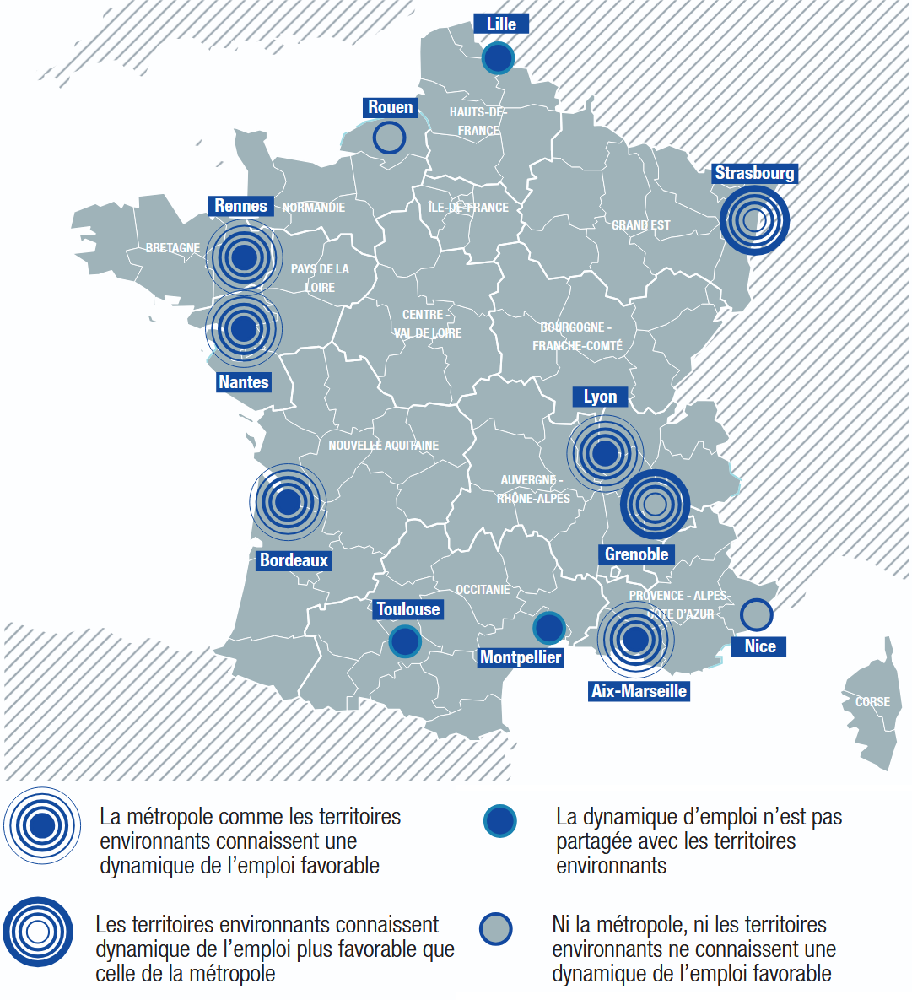

Avertissement
Ces pages web ont été conçues pour un usage sur un écran large de type ordinateur. Un usage en mode portrait, sur une fenêtre trop rétrécie, ou sur mobile ou tablette ne fonctionnera pas correctement.
Avertissement
Votre navigateur ne supporte pas certaines fonctionnalités utilisées sur ces pages web. Pour le visualiser correctement, vous devez mettre à jour votre navigateur ou en utiliser un plus récent.
Si vous êtes sur Safari, vous ne pouvez le mettre à jour qu’en faisant une mise à jour de Mac OS.
Insee, SIDE. Traitements Auran
L’évolution des créations d’établissements est un indicateur important du dynamisme économique local.
Au cours de la dernière décennie, Nantes Métropole a enregistré une hausse tendancielle du nombre de créations d’établissements.
Les dernières données disponibles suggèrent un récent ralentissement de ce rythme de créations d’établissements, à un niveau qui reste toutefois élevé.
Parallèlement, les défaillances d’entreprises, après une période de recul, ont connu un net rebond au cours des dernières années dans la métropole nantaise comme à l’échelle nationale.
Cette forte hausse s’inscrit dans le contexte de la sortie de la crise sanitaire, et peut s’interpréter en partie comme un effet de rattrapage : certaines entreprises fragiles, qui auraient normalement fait faillite pendant les années de la crise sanitaire, ont été temporairement soutenues par les dispositifs d’aide d’urgence mis en place pendant la pandémie.
La montée des prix de l’énergie et la hausse des taux d’intérêt à partir de 2022 ont également pesé sur la santé financière des entreprises, en particulier dans les secteurs de la construction, du commerce et de la restauration.
Au-delà de la simple dynamique de création d’entreprises, il est essentiel de s’intéresser aux modèles économiques qui placent l’utilité sociale et la coopération au cœur de leur fonctionnement.
2 800
Nombre d’établissements dans l’ESS en 2021
12,5%
Part des établissements de l’ESS sur l’ensemble des établissements du secteur privé
Ces activités à « impact positif » relèvent notamment de l’économie sociale et solidaire (ESS), qui désigne un ensemble d'entreprises organisées sous forme de coopératives, mutuelles, associations, entreprises sociales ou fondations, dont le fonctionnement interne et les activités sont fondés sur un principe de solidarité et d'utilité sociale.
L’économie sociale et solidaire est un employeur important sur Nantes Métropole, représentant près de 15 % des emplois salariés privés (soit 43 500 emplois en 2021).
Ces emplois de l'ESS sont notamment dédiés à l'action sociale (33%), à l'enseignement, et aux activités financières et d'assurance (13%).
Depuis 2010, les créations d’emplois dans l’ESS ont été sensiblement moins soutenues que dans le reste de l’économie métropolitaine, sauf depuis 2019. Un enjeu pour le secteur de l’économie social et solidaire consistera à maintenir cette dynamique dans les années à venir.
Différents statuts, labels ou dispositifs, souvent liés à des logiques de l’Économie Sociale et Solidaire (ESS), viennent encourager ou reconnaître l’engagement social de certaines structures.
56
sociétés à mission en 2023
Agence API, à partir de l’Observatoire des sociétés à mission
La qualité de « société à mission » est une qualité qui permet aux entreprises qui le souhaitent d’intégrer une raison d’être et des objectifs sociaux et/ou environnementaux dans leurs statuts.
49
structures ayant l’agrément Entreprise solidaire d’utilité sociale (ESUS) en 2023
DG Trésor, 2024
L’agrément « Entreprise solidaire d’utilité sociale » (ESUS) permet aux entreprises de l’ESS de valoriser encore davantage leur impact sociétal et d’avoir accès à des financements privés, notamment ceux issus de l’épargne salariale solidaire.
58
sociétés coopératives de production (SCOP) en 2023
URSCOP de l’Ouest, 2024
Les sociétés coopératives de production (SCOP) sont des sociétés majoritairement détenues par leurs salariés. Elles mettent l’accent sur la participation des salariés aux décisions de l’entreprise ainsi que sur le partage des bénéfices.
14
sociétés coopératives d’intérêt collectif (SCIC) en 2023
URSCOP de l’Ouest, 2024
Les sociétés coopératives d’intérêt collectif (SCIC) partagent avec les SCOP le principe de gouvernance démocratique mais s’en distinguent par l’objectif de produire des biens et services d’intérêt collectif, qui présentent un caractère d’utilité sociale.
Ces structures, dont le statut témoigne d’un engagement fort en faveur d’une gouvernance démocratique ou d’objectif sociaux / environnementaux, sont encore marginales dans l’ensemble du tissu économique territorial. Il est par ailleurs important de souligner que de nombreuses entreprises au statut traditionnel mettent en place des actions RSE ou à « impact positif » (réduction de l’empreinte carbone, mécanismes de partage de la valeur, mécénat), que les indicateurs existants permettent difficilement de recenser et quantifier de manière fiable.
5 000
emplois salariés privés dédiés à l’allongement de la durée d’usage des biens en 2022
Nantes Métropole - Urssaf, estimation Auran
D’autres modèles économiques se développent sur le territoire, et partagent souvent des valeurs, des finalités ou des approches communes avec l’économie sociale et solidaire.
1 450
emplois salariés dans la filière recyclage des déchets d’activités économiques
Loire-Atlantique - Solutions&co (2025), Recyclage des déchets d’activités économiques
C’est le cas par exemple de l’économie circulaire, un concept qui promeut le fonctionnement de l’économie sous forme de boucle fermée en réutilisant, réparant et recyclant les produits au lieu de les jeter. Elle inclut également les démarches d'écoconception, qui vise à minimiser les impacts environnementaux des produits dès leur conception, et d'économie de la fonctionnalité, fondée sur la mise à disposition d'un usage plutôt que la possession d'un bien.
1%
taux de réemploi des matériaux de construction
France entière - Ademe (2022)
Cette conception de l’économie, en rupture avec le modèle linéaire traditionnel du « extraire – produire – consommer – jeter », n’est certes pas nouvelle. Mais ses applications restent encore émergentes ou limitées à quelques produits (carton, bouteilles en verre, etc.). Un enjeu de développement et de passage à l’échelle qui concerne notamment le secteur du BTP qui représente la première source de déchets et de consommation de matières.
Au cours de la dernière décennie, la métropole nantaise a concentré environ 80 % des créations d’emplois de Loire-Atlantique (alors qu’elle représente moins de la moitié de la population ligérienne).
Ce dynamisme ne s’est pas fait au détriment des territoires voisins. Des études montrent que sur la métropole nantaise et dans d’autres métropoles française, une logique de « co‑développement » avec les territoires alentours a été observée. De même, les villes moyennes dans l’aire d’influence de la métropole nantaise ont toutes affiché une situation favorable.
Ce constat souligne également les interdépendances économiques entre EPCI ligériens, et l’enjeu du renforcement des coopérations économiques à une échelle territoriale élargie.
Dynamique de l’emploi dans les métropoles et les territoires avoisinants
CGET / France Stratégie, 2017